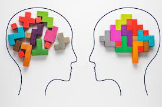
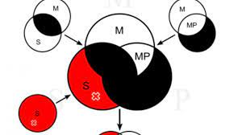

SILOGISMOS
El silogismo es la forma fundamental del argumento en la lógica formal. La noción de silogismo fue introducida en la ciencia por Aristóteles, quien lo consideraba como la forma fundamental del conocimiento científico que permite de dos proposiciones conocidas deducir nuevos y distintos juicios. Así, el silogismo es un argumento en el que de dos juicios, las llamadas premisas, se obtiene por intermedio del concepto común (término medio) contenido en ambas premisas, un nuevo juicio, deducción o conclusión. La forma más general de un silogismo se construye según este tipo: “Todos los hombres son mortales. Juan es un hombre. Por consiguiente, Juan es mortal”. En este silogismo, el concepto “hombre” es el término medio, el concepto común de ambas premisas, y que hace posible la consiguiente conclusión..
|
|
|
|---|---|
|  |  |